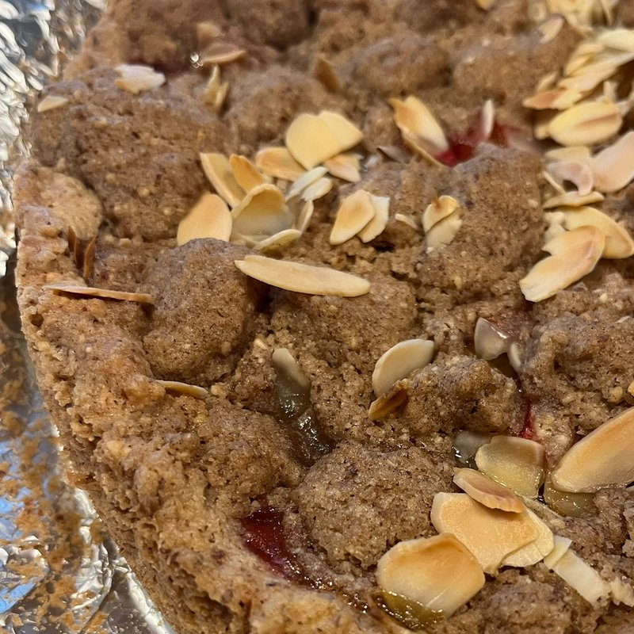

Plum Almond Tart
Zwetschgen-Mandel-Tarte
Almond shortcrust tart with plums and cinnamon almond streusel
Origin
The Zwetschgen-Mandel-Tarte pairs two German baking traditions: the almond tart and late-summer plum season. Zwetschgen—the small, dark-blue plums that flood German markets from August through October—are the classic fruit of German tarts and cakes. Oma's version sets them on a nutty almond shortcrust and crowns them with cinnamon almond streusel, a combination that lets the plums stay the star.
Perfect For
Naturally gluten-free and plant-based without anyone missing the wheat or butter—this is the tart to bring when the table has dietary needs and you don't want anyone to feel like an afterthought. Equally at home on the Kaffee und Kuchen table, at a farmers market stall, or as a dessert with whipped cream for those who can have it.
Availability
Available at local Asheville-area farmers markets. Contact us for direct orders, custom sizing for events, or wholesale inquiries.
Allergen Information
Contains: Nuts (almond). Gluten-free and plant-based.
Where to Buy
Plum Almond Tart is available through our wholesale program for coffee shops, markets, and restaurants throughout the Asheville, NC area. Learn more about wholesale partnerships or contact us directly.